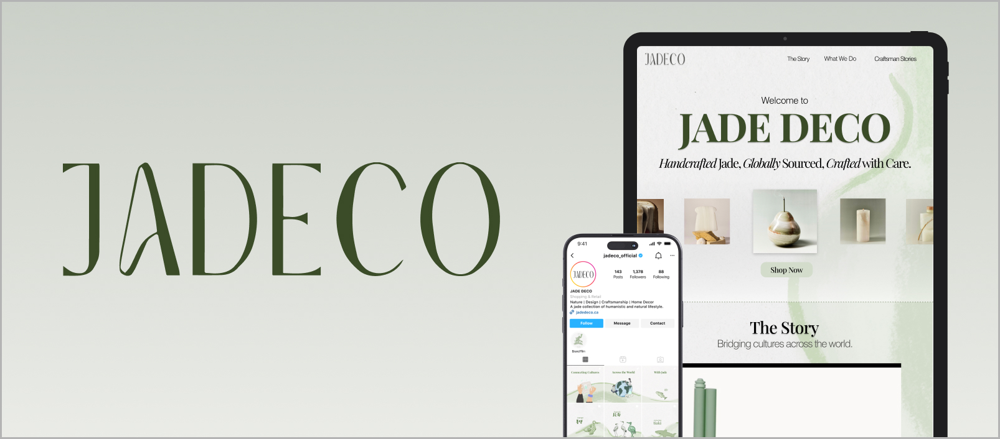
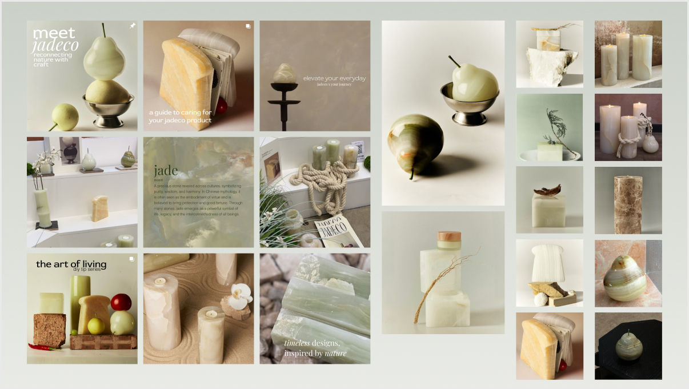
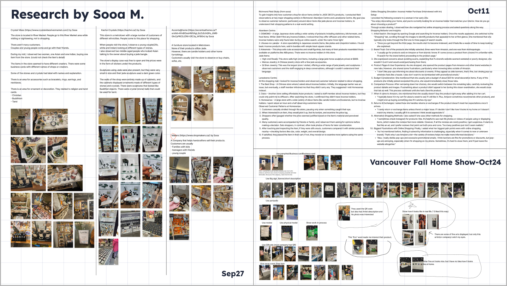
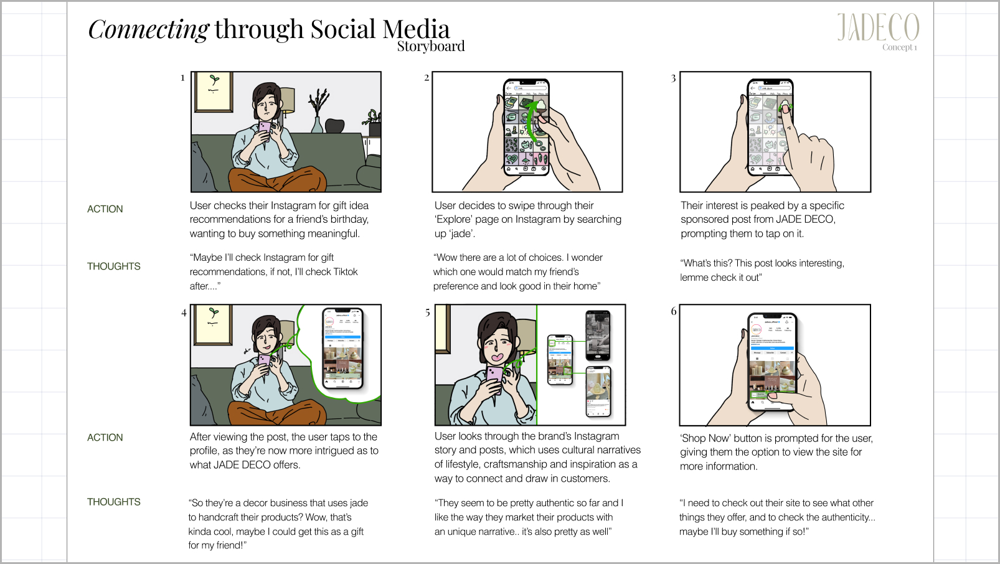
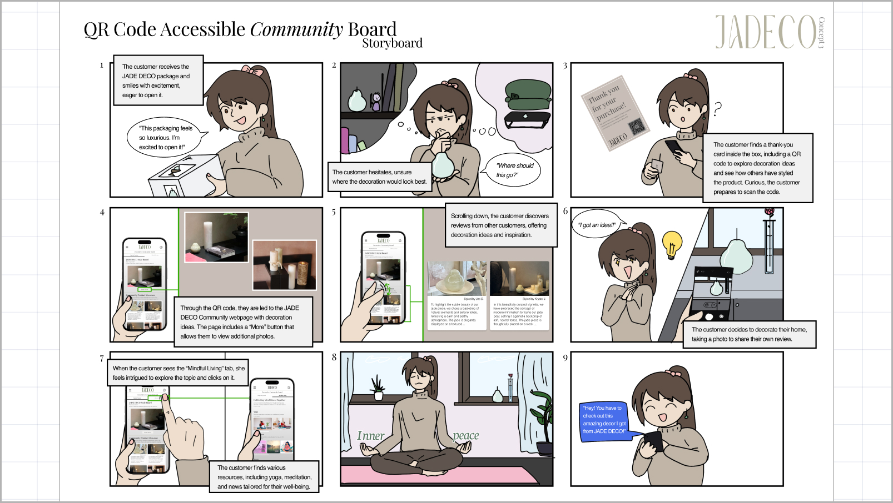
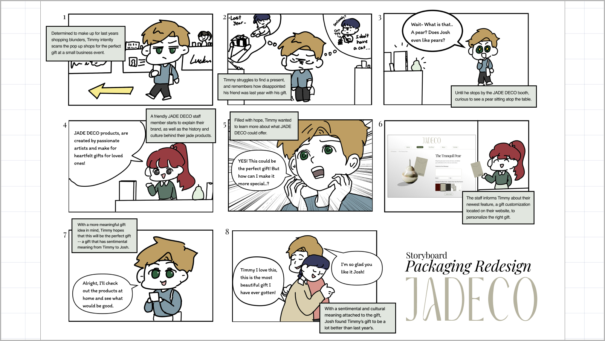
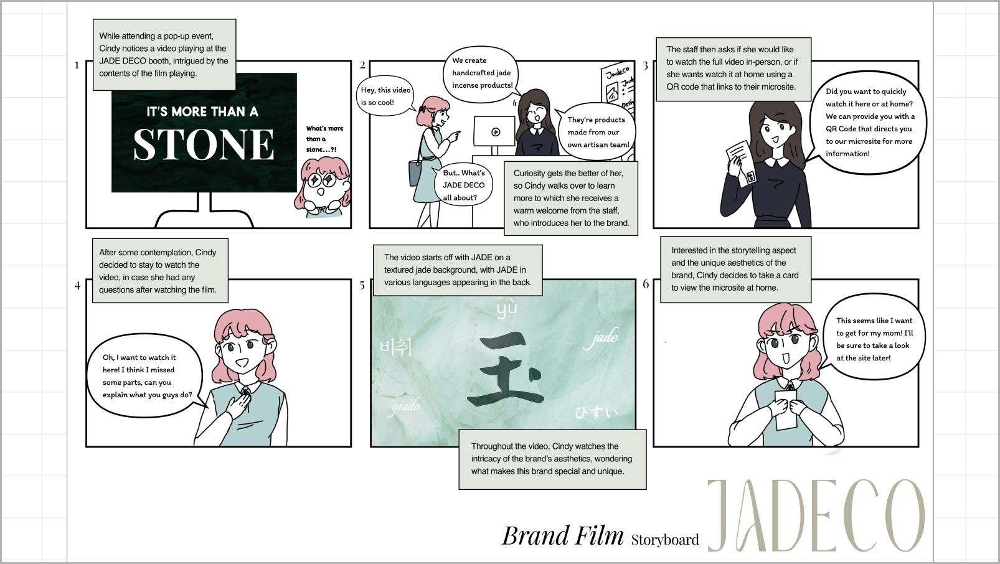
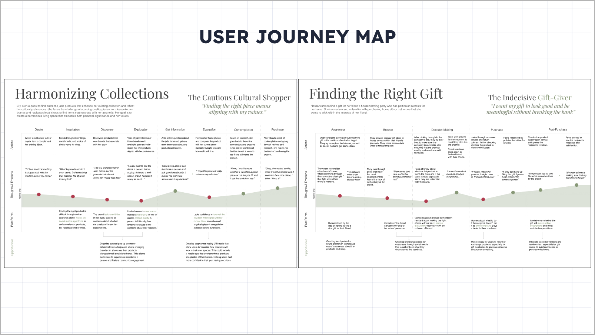
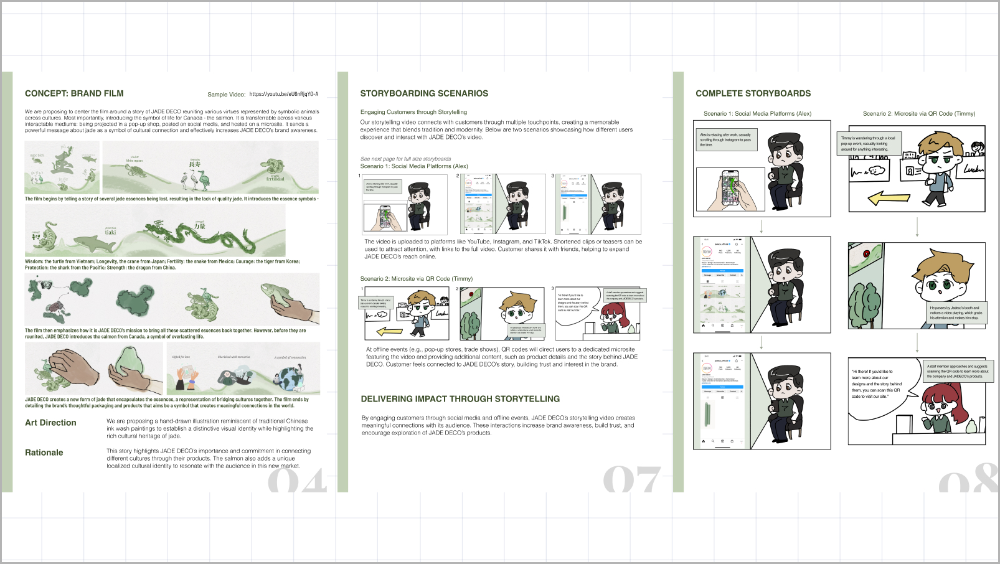

Jadeco is a Chinese home decor brand expanding into the Vancouver market — specializing in nature-inspired objects like jade candle holders and book stands. Over one semester, our team of six worked directly with the client to develop brand communication strategies tailored to local Canadian consumers: how to present products, what stories to tell, and how to build recognition in a new market from the ground up. My contributions spanned field research, hand-drawn illustration, and video editing — connecting what I observed in stores to what I put on the screen.

Within the team, I owned two main areas: field research and visual communication. For research, I visited home decor and lifestyle stores across Metro Vancouver to observe how similar products were displayed, priced, and promoted — and what resonated with local shoppers. For visual communication, I illustrated all storyboards used throughout the project and later edited the final brand video.
To understand the local market, I visited home decor shops across Metro Vancouver and documented product presentation, pricing strategies, and promotional techniques — focusing on items comparable to Jadeco's candle holders and book stands.
Key observations included how traditional aesthetics, cultural familiarity, and eco-conscious values influenced purchase decisions — insights that directly shaped our positioning recommendations for Jadeco.

I visualized four speculative marketing concepts to help Jadeco build more meaningful connections with local customers. All illustrations in the storyboards were hand-drawn by me — each one translated customer insight into a visual narrative, showing not just what to do, but why it would resonate.




We mapped the full journey of a potential Jadeco buyer — from first discovery through post-purchase — identifying key emotions, questions, and friction points at each stage. Two distinct shopper personas were mapped to capture different entry points into the brand.

I collaborated with the team to build a clear visual and narrative structure for Jadeco's brand film. All hand-drawn illustrations seen in the guideline are my own work — I built the visual structure scene by scene, then edited the final video using those drawings as the framework.
The film aimed to communicate Jadeco's core identity: nature-inspired craft, everyday beauty, and the quiet story behind each object.

The final brand video and full report are available below.
Field research changed how I think about market entry. Visiting stores in person — watching what people pick up, what they read on packaging, what makes them pause — gave me a kind of understanding that no secondary research could. For a brand like Jadeco, entering a new cultural context isn't just a marketing challenge; it's a design challenge. The product has to speak before anyone explains it. That idea — that objects communicate before words do — is something I now bring to every project where visual language matters.